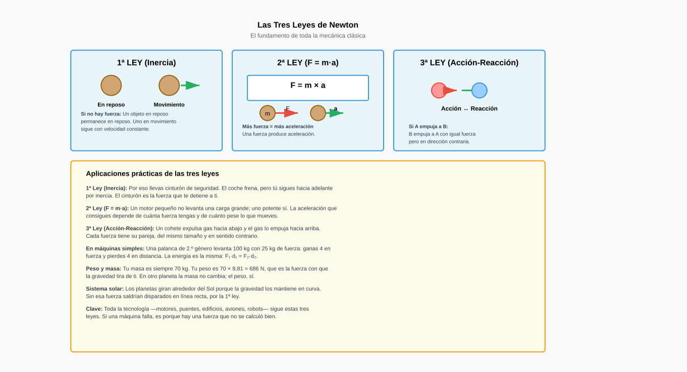
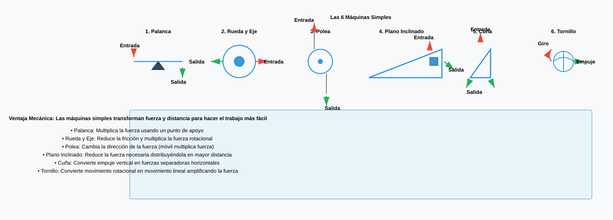
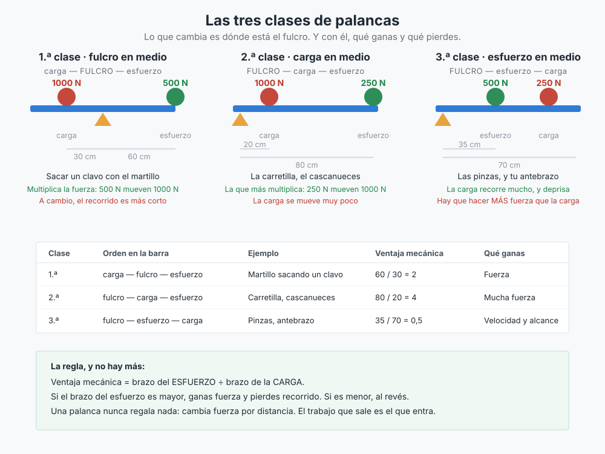
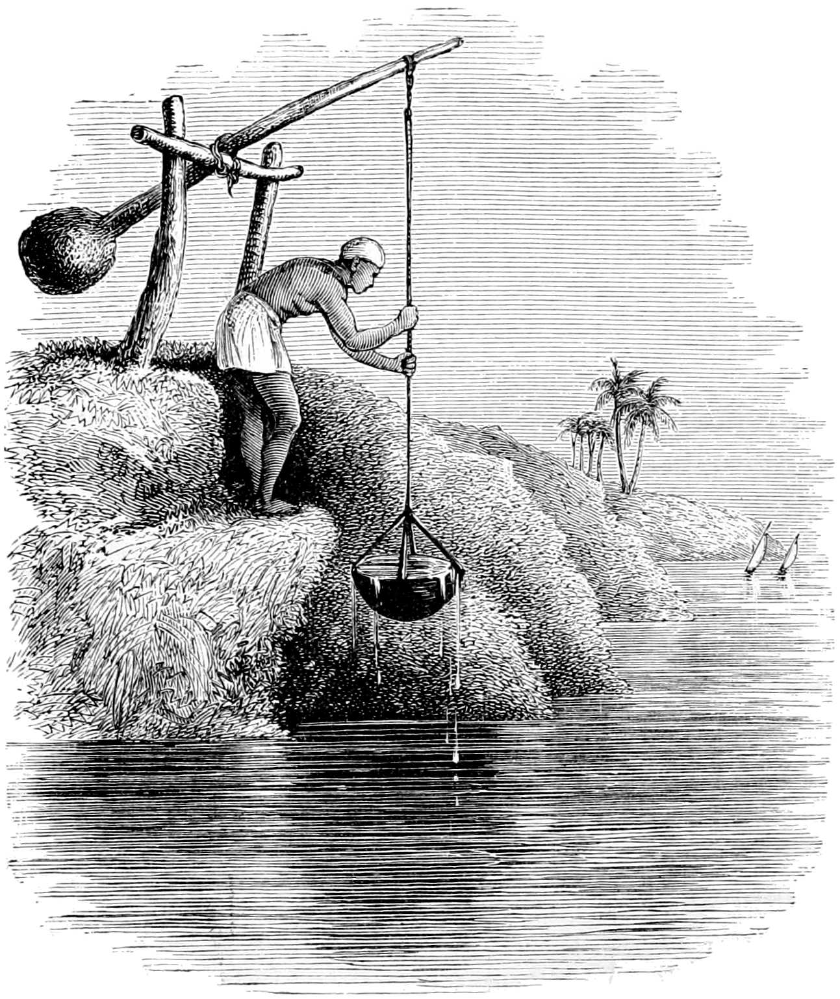
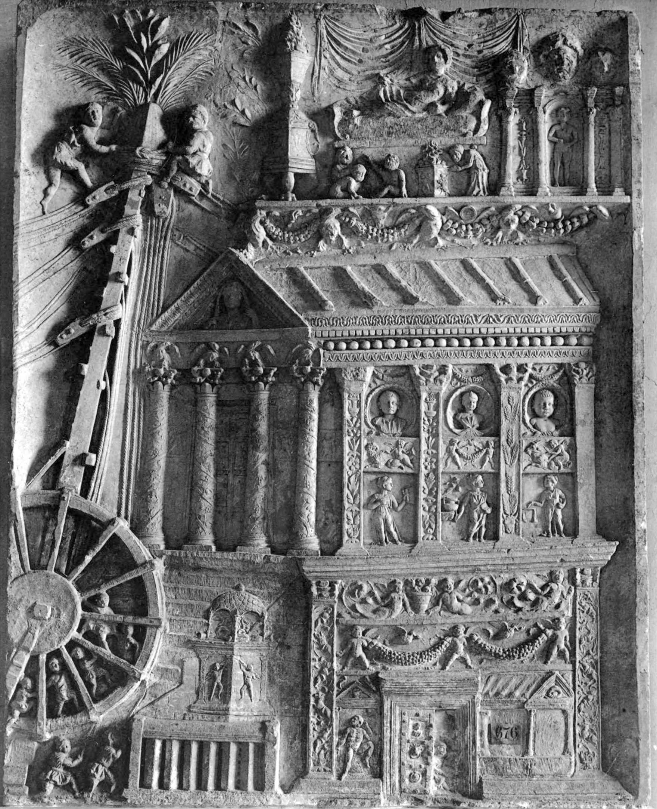
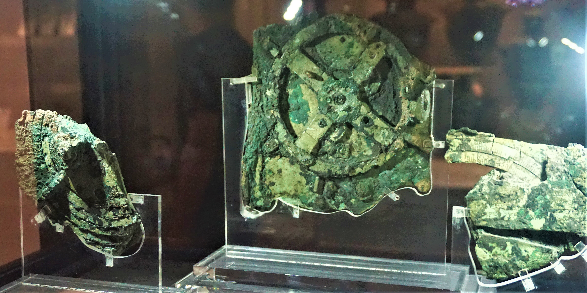
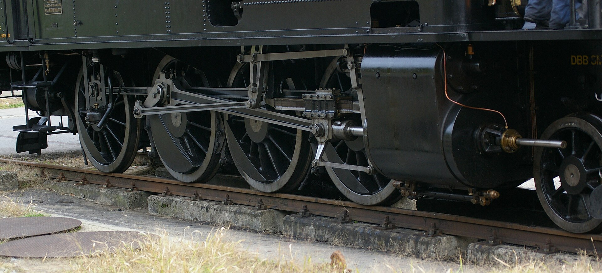
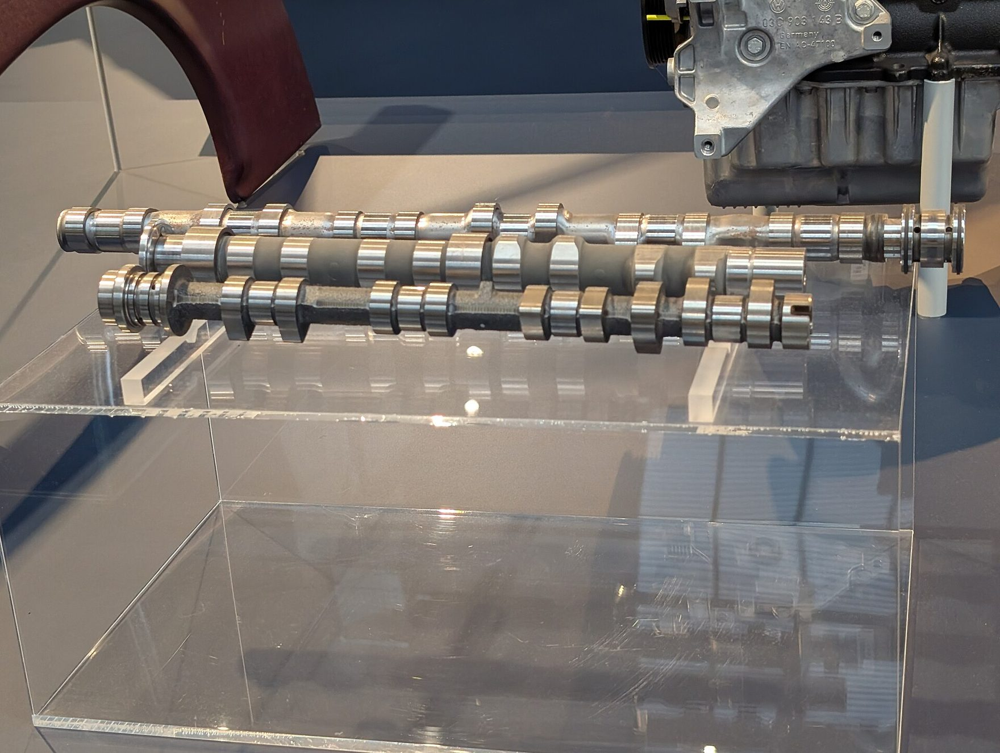
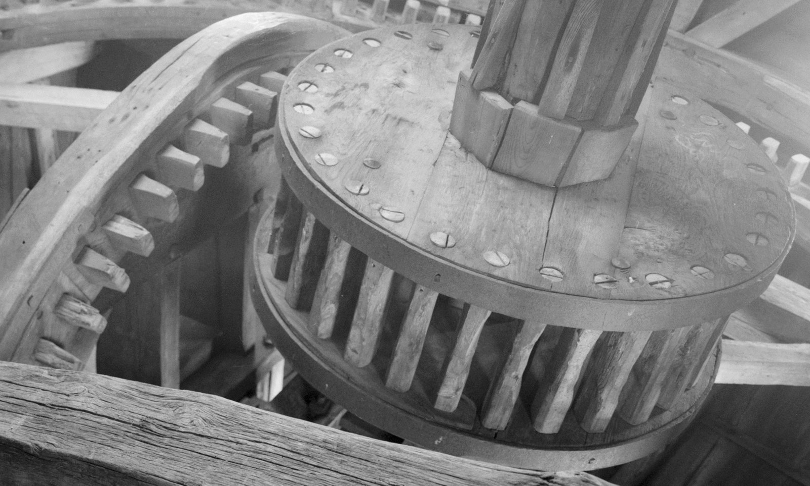
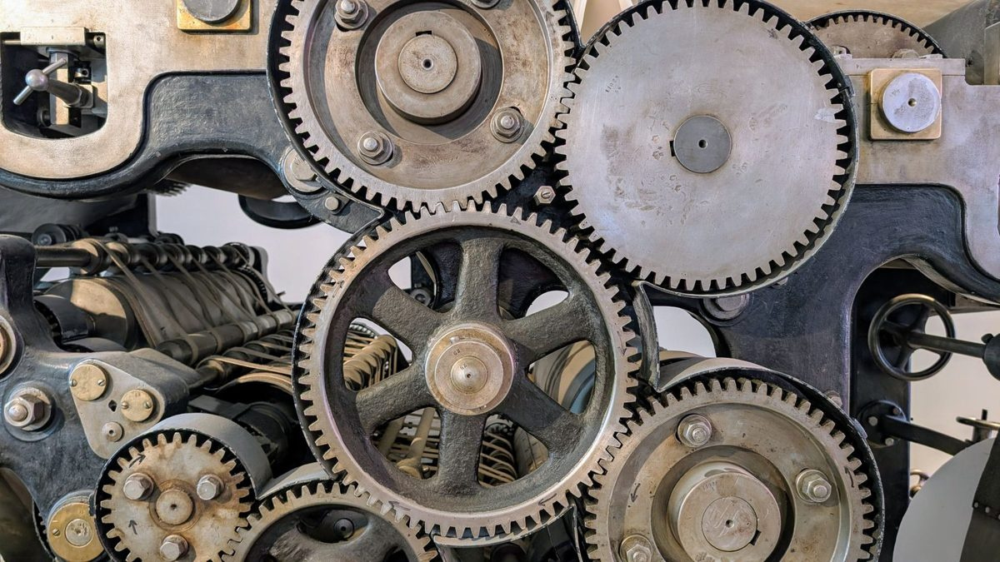

La barra que multiplica: por qué un tubo afloja lo que tú no
Una palanca no te hace más fuerte: te cambia fuerza por recorrido. De ahí sale todo lo demás del tema.
En el tema anterior todo lo que construías tenía que quedarse quieto: una estructura que se mueve es una estructura que ha fallado. Desde hoy pasa justo lo contrario. Queremos que se mueva —y que se mueva donde nosotros digamos, con la fuerza que nosotros digamos.
Empecemos por algo que has visto: cambiar la rueda de un coche. La tuerca está apretada con máquina y con la llave del maletero no hay quien la mueva. Entonces alguien mete un tubo en el mango, empuja casi sin ganas y la tuerca sale.
Aquí se acaban las respuestas. Sabemos que funciona, pero no sabemos cuánto, y por eso no podríamos diseñar nada: ni decidir qué largo tiene que tener el tubo, ni saber si con ese tubo va a salir o vamos a doblar la llave.
Y hay una segunda pregunta, peor: ¿por qué no puedes con ella a pelo? La tuerca de una rueda se aprieta con unos 110 newton-metro. Con la llave corta, de 20 cm, eso son 550 N: como colgar 55 kg de tu mano. Empujando con un brazo, a tu edad, andas del orden de los 250 N. No es cuestión de ganas: el músculo no llega.
De qué va este tema
El músculo mueve poco y mal: qué ponemos entre él y el problemaVoz sintetizada y audio propio. La boca sigue el volumen real de la voz, así que se mueve cuando habla y se para en los silencios.
Una barra, un punto y un trato

Pon una barra sobre un punto fijo, la carga en un lado y tu mano en el otro. Eso es todo el invento. Lo interesante es que la barra no reparte la fuerza a partes iguales: reparte según lo lejos que esté cada cosa del punto de apoyo.
En la escena, la carga son 50 kg —500 N— y la barra mide 2,30 m. Mueve el apoyo pulsando sobre la barra y mira qué pasa con la fuerza que te pide.
Dos cosas que conviene haber visto antes de copiar nada. La primera: cuanto más cerca pones el apoyo de la carga, menos fuerza necesitas. La segunda, la importante: eso no es gratis. Cada vez que divides la fuerza entre tres, tu mano tiene que recorrer tres veces más camino. La palanca no fabrica fuerza de la nada; la cambia por recorrido.
Definiciones
Mecanismo: conjunto de piezas que recibe un movimiento y una fuerza y los entrega cambiados: más fuerza, más velocidad o en otra dirección.
Palanca: barra rígida que gira alrededor de un punto de apoyo o fulcro.
Sus cuatro elementos: la resistencia R (lo que hay que vencer) con su brazo bR, y la fuerza F (la que haces tú) con su brazo bF. El brazo es la distancia de cada fuerza al punto de apoyo.
La ley de la palanca
F · bF = R · bR
Ventaja mecánica: las veces que la palanca multiplica tu fuerza. VM = R / F = bF / bR.
Lo que se gana se paga
Si una palanca multiplica tu fuerza por 4, tu mano recorre 4 veces lo que recorre la carga. Ninguna máquina te regala nada: cambia fuerza por recorrido.
Los tres géneros
Según dónde caiga el punto de apoyo salen tres palancas distintas, y cada una sirve para una cosa distinta. Puedes verlas en la escena de arriba con los botones.
Clasificación
- Primer género — el apoyo en medio, entre la fuerza y la resistencia. Puede ganar o perder fuerza, según dónde pongas el apoyo. Tijeras, alicates, balancín, el martillo sacando un clavo.
- Segundo género — la resistencia en medio. Siempre gana fuerza (bF es mayor que bR forzosamente). Carretilla, cascanueces, abrebotellas.
- Tercer género — la fuerza en medio. Siempre pierde fuerza y gana recorrido y velocidad. Pinzas de depilar, caña de pescar, tu propio brazo.

Animación de los tres géneros con la ley aplicada paso a paso. El vídeo no se carga hasta que lo pulsas, y se reproduce sin cookies de seguimiento. Si no se ve aquí —porque la red del centro bloquee YouTube o porque ese vídeo no se deje empotrar—, ábrelo directamente aquí. El vídeo es de su autor y no forma parte del material publicado bajo la licencia de esta página.

La palanca no la inventó nadie: es demasiado antigua para tener autor. En Egipto se regaba con shaduf —una pértiga con un cubo en un extremo y una piedra en el otro— hace unos 4.000 años, y se sigue regando así en algunos sitios.
Lo que sí tiene autor es la explicación. La demuestra Arquímedes en el siglo III a. C., casi dos mil años después de que la gente llevara usando palancas todos los días. La famosa frase —dadme un punto de apoyo y moveré el mundo— no está en ningún texto suyo: la cuenta Pappus de Alejandría unos quinientos años más tarde.
Es un patrón que se repite en toda la tecnología: primero se usa, después se entiende. Y entenderlo es lo que permite calcular en vez de probar.
Vuelve al título del tema: el músculo mueve poco y mal. Ahora se puede decir con precisión por qué. Tu bíceps se agarra al antebrazo a unos 5 cm del codo, y la mano está a unos 35 cm. Es una palanca de tercer género, la que pierde fuerza: para sostener 5 kg en la mano, el bíceps tira del orden de 35 kg.
Parece un mal diseño y es justo al revés. A cambio de esa pérdida, tu mano se mueve siete veces más rápido que el punto donde tira el músculo. Tu cuerpo ha elegido velocidad en vez de fuerza. Los mecanismos que vamos a ver el resto del tema son, casi todos, formas de deshacer ese cambio cuando lo que hace falta es fuerza.
Material
Una regla de 30 cm, un lápiz de sección hexagonal (hace de apoyo y no rueda) y unas 20 monedas iguales. Sirven arandelas, tapones o gomas de borrar: lo único que importa es que pesen lo mismo entre ellas.
Qué hay que hacer
- Montad la palanca: el lápiz debajo de la regla, en la marca de los 15 cm. Comprobad que queda equilibrada a cero.
- Poned 6 monedas a 10 cm del apoyo, a un lado. Antes de tocar nada: escribid cuántas monedas harán falta a 15 cm del apoyo por el otro lado. Usad la ley, no la intuición.
- Comprobadlo. Anotad la predicción y el resultado real, aunque no coincidan.
- Repetidlo cuatro veces más cambiando la distancia o el número de monedas. Tabla de cinco filas con: número de monedas y brazo de cada lado, y las dos multiplicaciones.
- Ahora el otro lado del trato. Con el apoyo en 5 cm y la carga en el extremo corto, subid la carga 2 cm y medid cuánto ha bajado vuestra mano. Comparad esa proporción con la de los brazos.
Cómo se evalúa
- Las cinco predicciones están escritas antes de medir (3 puntos).
- La tabla está completa y las dos multiplicaciones salen parecidas (3 puntos).
- La medida de los recorridos está hecha y comparada con los brazos (2 puntos).
- Hay una explicación escrita de por qué no cuadra del todo (2 puntos).
Ya se puede contestar con un número a la pregunta del principio. La tuerca pide 110 N·m. Con la llave de 20 cm, 550 N. Con el tubo puesto, 60 cm, 183 N: la fuerza se ha dividido entre tres porque el brazo se ha multiplicado por tres. Y a cambio tu mano recorre tres veces más arco, que es un precio que nadie nota.
- Una carretilla lleva 60 kg. La rueda está a 30 cm de la carga y los mangos a 120 cm de la rueda. ¿Qué fuerza haces?
Ver respuesta
El apoyo es la rueda. bR = 0,30 m y bF = 1,20 m. F = 600 · 0,30 / 1,20 = 150 N, unos 15 kg. Levantas 60 kg haciendo 15: es una palanca de segundo género.
- ¿Por qué unas pinzas de depilar son de tercer género si hacen menos fuerza de la que pones?
Ver respuesta
Porque lo que se busca ahí no es fuerza, es precisión. La fuerza va en medio, así que la punta se mueve poco aunque tus dedos se muevan mucho: puedes controlar décimas de milímetro. Perder fuerza es el precio, y sale a cuenta.
- Si una palanca multiplica tu fuerza por 5, ¿qué pasa con el recorrido?
Ver respuesta
Se multiplica por 5 el tuyo: para subir la carga 2 cm, tu mano recorre 10 cm. El trato siempre es el mismo, y va a volver a aparecer en las dos sesiones siguientes.
Ochenta kilos hasta el andamio: poleas y polipasto
La palanca se queda sin recorrido. Una cuerda puede ser tan larga como haga falta, y con ella vuelve a aparecer el mismo trato.
Ayer quedó claro el trato: fuerza a cambio de recorrido. Hoy el problema es el recorrido.
Una obra. Hay que subir un saco de 80 kg hasta el andamio, ocho metros por encima de tu cabeza. Con una palanca no hay manera: para que la carga suba ocho metros, tu extremo tendría que recorrer mucho más, y no existe esa barra.
Piensa qué puedes hacer en cada caso. Tirando hacia arriba solo tienes los brazos, y encima en la peor postura. Tirando hacia abajo puedes colgarte: sumas tu propio peso, apoyas los pies, y además cabe más gente en la cuerda.
Cambiar la dirección de una fuerza no multiplica nada —y aun así puede ser media solución.
Una rueda con una garganta
Una polea es una rueda con un canal por donde pasa la cuerda. No parece gran cosa. Según de dónde cuelgue, hace dos trabajos completamente distintos.
En la escena, el saco son 80 kg —800 N—. Prueba los cuatro montajes y, en cada uno, pulsa Tirar de la cuerda y mira las dos cosas a la vez: lo que marca la fuerza y lo que baja tu mano.
La cuenta que hay debajo es de una sola línea: la carga se reparte entre los tramos de cuerda que la sostienen. Si la sostienen cuatro tramos, cada uno aguanta la cuarta parte, y tú estás en uno de ellos.
Los tres montajes
- Polea fija: su eje está sujeto a un punto fijo. No multiplica la fuerza (F = R), solo cambia su dirección.
- Polea móvil: su eje va enganchado a la carga y sube con ella. La sostienen dos tramos de cuerda: F = R / 2, y hay que tirar el doble de cuerda.
- Polipasto (o aparejo): varias poleas fijas y móviles combinadas. F = R / n, siendo n el número de tramos que sostienen la carga. Hay que tirar n metros de cuerda por cada metro que sube la carga.
La regla de oro de la mecánica
Lo que se gana en fuerza se pierde en recorrido. Ninguna máquina crea energía: solo la transforma. Y en la vida real, además, el rozamiento se queda una parte por el camino.
Enseña los tres montajes seguidos, con la cuerda que hay que tirar en cada uno. El vídeo no se carga hasta que lo pulsas, y se reproduce sin cookies de seguimiento. Si no se ve aquí —porque la red del centro bloquee YouTube o porque ese vídeo no se deje empotrar—, ábrelo directamente aquí. El vídeo es de su autor y no forma parte del material publicado bajo la licencia de esta página.

El ingeniero romano Vitruvio describe hacia el año 25 a. C., en el libro X de De architectura, la máquina de elevación de las obras: un mástil, un cabrestante y un polipasto que él llama polyspastos. Se conserva además dibujada, en el relieve de la tumba de los Haterii.
Los historiadores de la técnica estiman, a partir de esos textos, que un polipasto de tres por cinco poleas movido por cuatro hombres en el cabrestante subía unos 3.000 kg. Y que si en vez del cabrestante se ponía una rueda de andar —una rueda enorme con hombres caminando por dentro— se llegaba a 6.000 kg con la mitad de la gente, porque esa rueda es una palanca gigante: el radio de la rueda contra el radio del eje.
Para comparar: en las rampas de las pirámides se calcula que hacían falta unos 50 hombres por bloque de dos toneladas y media, es decir, unos 50 kg por persona. Con la rueda de andar se pasa a unos 3.000 kg por persona. Sesenta veces más, con los mismos músculos. Lo único que cambió fue lo que había entre el hombre y la piedra.
Material
Dos palos de escoba (o dos mangos de fregona) y unos 4 m de cuerda que no corte las manos. Nada más.
Qué hay que hacer
- Dos personas sujetan un palo cada una, en horizontal, paralelos y separados un metro. Tienen que separarlos con todas sus fuerzas.
- Atad la cuerda a un palo y dad una vuelta alrededor del otro. Una tercera persona tira del extremo. Anotad quién gana.
- Repetidlo con dos, tres y cuatro vueltas. Anotad en cada caso si los palos se juntan y cómo de fácil es.
- Medid, con una cinta: cuanta cuerda tira quien tira, y cuánto se acercan los palos. Hacedlo con dos y con cuatro vueltas.
- Escribid el informe: qué número de tramos hay en cada caso, qué fuerza debería hacer falta en teoría y qué pasó de verdad.
Cómo se evalúa
- El montaje está dibujado y se cuentan bien los tramos (3 puntos).
- Están medidos la cuerda tirada y el acercamiento (3 puntos).
- La relación entre las dos medidas se compara con el número de tramos (2 puntos).
- El informe explica una diferencia entre la teoría y lo que pasó (2 puntos).
El saco de 80 kg sube al andamio con un polipasto de cuatro tramos tirando de 200 N, unos 20 kg: lo hace una persona sola. A cambio, para subirlo ocho metros hay que tirar de treinta y dos metros de cuerda. Nadie regala nada.
- ¿Para qué sirve una polea fija si no multiplica la fuerza?
Ver respuesta
Para cambiar la dirección. Eso te deja tirar hacia abajo, usar tu propio peso, apoyar los pies y poner a varias personas en la misma cuerda. Además te permite estar lejos de la carga, que en una obra es media seguridad.
- Un polipasto sube 120 kg y quien tira hace 300 N. ¿Cuántos tramos tiene?
Ver respuesta
La carga son 1.200 N. n = 1.200 / 300 = 4 tramos. Y para subirla un metro habrá que tirar de cuatro metros de cuerda.
- ¿Por qué en la realidad hay que hacer algo más fuerza de la que dice la fórmula?
Ver respuesta
Por el rozamiento de las poleas y por el peso de las poleas móviles, que también hay que subir. La fórmula da el caso ideal; la máquina real siempre paga un peaje.
El motor gira como quiere: engranajes y relación de transmisión
Tus piernas tienen una velocidad y la rueda necesita otra. Los dientes son la forma de traducir una en la otra, pagando siempre el mismo precio.
Una bicicleta con cambio. El que pedalea es el mismo, la cuesta es la misma y la bici es la misma.
Empecemos por el problema de fondo, que es de las piernas. Tú pedaleas cómodo a unas 60 vueltas por minuto, una por segundo, y ahí no hay mucho margen: a 20 rpm te atascas y a 150 te agotas. La rueda, en cambio, tiene que girar a 180 rpm para ir a 23 km/h y a 50 rpm cuando subes. Las piernas tienen una velocidad y la rueda necesita otra.
Prueba la solución fácil: dos ruedas lisas que se tocan, una en el eje de los pedales y otra en el de la rueda. Una arrastra a la otra por rozamiento. Funciona perfectamente… hasta que aprietas de verdad, y entonces patinan. Justo cuando más falta hacía que no patinaran.
Dientes: dejar de pedir el favor
La solución a que patine no es apretar más las ruedas: es que no puedan patinar. Se les ponen dientes y el contacto deja de depender del rozamiento. Los dientes se empujan unos a otros y la cuenta se vuelve exacta: por cada diente que avanza una, avanza un diente la otra.
Para que dos ruedas engranen, sus dientes tienen que ser del mismo tamaño. Y si los dientes miden lo mismo, una rueda con el triple de dientes tiene el triple de diámetro: el número de dientes y el tamaño son la misma información. Por eso a partir de ahora contamos dientes y nos olvidamos de medir.
Transmisión por engranajes
Engranaje: par de ruedas dentadas que engranan entre sí para transmitir el giro de un eje a otro. La que manda es la motriz (entrada) y la que obedece es la conducida (salida).
Relación de transmisión: las veces que la salida gira por cada vuelta de la entrada.
i = z1 / z2 = n2 / n1
z son los dientes y n las vueltas por minuto (rpm). El 1 es la entrada y el 2, la salida.
- i menor que 1: reductor. Gira más despacio y con más fuerza.
- i mayor que 1: multiplicador. Gira más deprisa y con menos fuerza.
- Dos ruedas engranadas giran en sentidos contrarios. Una rueda intermedia («loca») invierte el sentido y no cambia la relación.
Cuando los ejes están lejos
- Cadena y piñones: transmite a distancia, mismo sentido y sin deslizamiento. Es lo de la bicicleta.
- Correa y poleas: más barata y silenciosa, pero puede patinar. A veces eso es bueno: si algo se atasca, patina la correa en vez de romperse el motor.
- Tornillo sin fin y rueda dentada: el tornillo cuenta como un solo diente, así que con una rueda de 40 hace falta una vuelta por diente: i = 1/40. Reducción enorme en muy poco sitio, y no se puede mover al revés.
La bici, con números
Plato de 48 dientes, piñón de 16: i = 48/16 = 3. Cada pedalada son tres vueltas de rueda. A 60 pedaladas por minuto son 180 rpm, y con una rueda de 2,10 m de perímetro salen unos 23 km/h. Cambia al piñón de 28 dientes: i = 1,7, unos 13 km/h… y casi el doble de fuerza en la rueda. Eso es subir la cuesta.
Animación de trenes de engranajes con la relación de transmisión calculada. El vídeo no se carga hasta que lo pulsas, y se reproduce sin cookies de seguimiento. Si no se ve aquí —porque la red del centro bloquee YouTube o porque ese vídeo no se deje empotrar—, ábrelo directamente aquí. El vídeo es de su autor y no forma parte del material publicado bajo la licencia de esta página.

Para qué sirve esto de verdad: la caja de cambios
Un motor de gasolina solo da fuerza en una franja estrecha de vueltas, más o menos entre 2.000 y 5.000 por minuto. Pero el coche tiene que arrancar parado en una cuesta y también ir a 120 por autovía. Con una sola relación es imposible.
La solución es exactamente lo que acabas de ver: varios pares de ruedas dentadas montados sobre dos ejes, y una palanca que elige cuál de ellos transmite.
La caja de cambios
Es un conjunto de pares de ruedas dentadas montados sobre dos ejes. La palanca elige cuál de los pares transmite el giro del motor a las ruedas.
- Marchas cortas (1.ª, 2.ª): mucha reducción → mucha fuerza y poca velocidad. Para arrancar y subir cuestas.
- Marchas largas (4.ª, 5.ª): poca o ninguna reducción → mucha velocidad y poca fuerza. Para carretera.
- La marcha atrás añade una rueda intermedia que solo invierte el sentido.
Y el trato de siempre: la caja no crea fuerza. Lo que gana en fuerza lo paga en vueltas, exactamente igual que la palanca y que el polipasto.
En 1901, unos pescadores de esponjas encontraron frente a la isla griega de Anticitera los restos de un naufragio, y entre ellos un bulto de bronce corroído. Dentro había una treintena de ruedas dentadas montadas unas sobre otras, algunas con más de 200 dientes cortados a mano.
Es del siglo II a. C. y servía para predecir las posiciones del Sol y la Luna y los eclipses. Nadie volvió a fabricar engranajes de esa precisión hasta los relojes de catedral, mil cuatrocientos años después.
Y no lo sabemos porque nadie lo escribiera: lo sabemos porque se encontró el aparato. De casi toda la tecnología antigua se ha perdido la explicación, y a veces también el objeto. Este se salvó porque se hundió un barco.
Qué hay que hacer
Una bici de montaña con dos platos (32 y 48 dientes) y cinco piñones (14, 18, 21, 24 y 32 dientes). La rueda mide 2,10 m de perímetro y quien pedalea lo hace siempre a 60 rpm.
- Tabla de diez combinaciones: plato, piñón, relación i, vueltas de rueda por minuto y velocidad en km/h.
- Señalad la combinación más rápida y la más fuerte, y decid para qué sirve cada una.
- Hay dos combinaciones distintas que dan exactamente la misma velocidad. Encontradlas y explicad por qué pasa eso.
- La cuesta del instituto se sube a 7 km/h. ¿Qué combinación elegís? Justificadlo con la tabla.
- Problema aparte. Un motor gira a 3.000 rpm y una cinta transportadora necesita 100 rpm. Diseñad la reducción con dos parejas de ruedas, usando solo ruedas de 10, 12, 15, 20, 30, 50 y 60 dientes. Explicad por qué no se hace con una sola pareja.
Cómo se evalúa
- La tabla está completa y las velocidades bien calculadas (3 puntos).
- Las dos combinaciones que coinciden están encontradas y explicadas (2 puntos).
- La elección para la cuesta está justificada con datos (2 puntos).
- La reducción de dos etapas funciona y está comprobada (3 puntos).
Cambiar de marcha no cambia tus piernas: cambia la relación entre lo que gira tu pie y lo que gira la rueda. Con el plato pequeño la rueda da menos vueltas por pedalada, así que vas más lento y empujas con más fuerza. Y al revés. Es el mismo trato de la palanca y del polipasto, por tercera vez.
- Una rueda de 20 dientes que gira a 300 rpm mueve otra de 60. ¿A qué velocidad gira la segunda, y en qué sentido?
Ver respuesta
i = 20/60 = 0,33. n2 = 300 · 0,33 = 100 rpm, y en sentido contrario. Es un reductor: tres veces menos velocidad y tres veces más fuerza.
- ¿Por qué la bicicleta lleva cadena y no dos ruedas dentadas engranadas?
Ver respuesta
Porque los pedales y la rueda están a un metro el uno de la otra. Dos ruedas engranadas tienen que tocarse; la cadena transmite a distancia y, además, mantiene el mismo sentido de giro.
- ¿Por qué el mecanismo de una clavija de guitarra lleva tornillo sin fin?
Ver respuesta
Por dos motivos a la vez. Da una reducción enorme, así que puedes afinar con mucha precisión; y no se deja mover al revés, así que la tensión de la cuerda no desafina la clavija sola.
El motor gira y el pistón sube y baja: transformar el movimiento
Hasta aquí entraba un giro y salía un giro. Desde aquí cambia la naturaleza del movimiento, y eso pide cuatro mecanismos nuevos.
Repasa lo de las tres sesiones anteriores y busca lo que tienen en común. La palanca recibe un empujón y devuelve un empujón. El polipasto recibe un tirón y devuelve un tirón. Los engranajes reciben un giro y devuelven un giro. Siempre sale lo mismo que entró, cambiado de tamaño pero no de clase.
Y resulta que casi nada de lo que te rodea funciona así. El motor de un coche gira, pero dentro lo que hay es un pistón que sube y baja. El motor del portón del garaje gira, pero la puerta corre recta. El limpiaparabrisas va y viene. La aguja de una máquina de coser sube y baja mientras el motor da vueltas.
La solución fácil, y por qué no sirve
Lo primero que se le ocurre a casi todo el mundo ya lo sabes hacer: enrollar una cuerda en un tambor. Giras el tambor y la cuerda se recoge, tirando de lo que sea en línea recta. Es el torno del pozo de toda la vida, y funciona.
Funciona para sacar un cubo de agua. Para lo demás se cae por cuatro sitios, y conviene verlos uno a uno porque cada uno explica un mecanismo de hoy:
- Una cuerda solo tira. No empuja. La mitad de las máquinas necesitan empujar.
- No vuelve sola. Para que baje hace falta que algo la baje: la gravedad, otra cuerda, un peso.
- Conforme se enrolla, la cuerda se monta sobre sí misma y el tambor engorda: cada vuelta sube un poco más que la anterior. No puedes calcular cuánto sube por vuelta, y eso descarta la cuerda para cualquier cosa de precisión.
- Y sobre todo: un motor de coche hace 3.000 vueltas por minuto. Cincuenta por segundo. Una cuerda ahí no dura ni un minuto.
Así que hace falta otra cosa. Cuatro cosas, en realidad, y cada una resuelve un caso distinto.
Transmitir y transformar no son lo mismo
Aquí se parte el tema en dos mitades, y el corte es este: en las sesiones anteriores el movimiento se transmitía —entraba un giro y salía un giro—. A partir de ahora el movimiento se transforma: entra un giro y sale otra cosa. Cambia la naturaleza del movimiento, no solo su tamaño.
Las dos familias de mecanismos
- De transmisión: la salida es del mismo tipo que la entrada. Palanca, poleas, engranajes, cadena, correa, tornillo sin fin.
- De transformación: la salida es de otro tipo. Casi siempre entra un giro y sale un movimiento rectilíneo (todo seguido en línea recta) o alternativo (ir y venir sin parar).
El primero: biela y manivela
Coge una barra y sujeta un extremo a un punto de una rueda que no sea el centro. El otro extremo, a algo que solo pueda ir y venir en línea recta. Ya está. Ese punto descentrado es la manivela y la barra es la biela.
Mira la escena. Y no mires solo el dibujo: mira la gráfica de abajo, que dice dónde está el pistón en cada grado de la vuelta. Cambia la longitud de la biela con los botones y fíjate en dos cosas: en que la carrera no cambia, y en que la curva sí cambia.
La primera es la que hay que quedarse: la carrera del pistón es siempre el diámetro de la circunferencia que describe la muñeta, o sea el doble del radio de la manivela. Da igual lo larga que sea la biela. Si quieres más recorrido, no alargues la biela: descentra más la manivela.
La segunda es más fina, y es la que explica que un motor suene como suena: el pistón no va y viene a velocidad constante. A un cuarto de vuelta ya ha recorrido más de la mitad del camino, porque la biela, al inclinarse, lo empuja de lado. Cuanto más corta es la biela, más brusco es el reparto.
Biela-manivela
Transforma un movimiento circular en uno alternativo (de ida y vuelta), y también al revés.
Carrera = 2 · r, siendo r el radio de la manivela. La longitud de la biela no cambia la carrera.
Funciona igual de bien en los dos sentidos, y es el único que convierte un vaivén en vueltas enteras, una detrás de otra. Por eso con él un motor convierte los empujones del pistón en giro, y una máquina de coser convierte el giro en el sube y baja de la aguja.
Los puntos muertos
Dos veces por vuelta, la biela y la manivela quedan en línea. En esa posición el pistón empuja justo hacia el eje de giro y no consigue hacer girar nada. Para pasar de ahí hace falta un volante: una rueda pesada que guarda la inercia de la vuelta anterior.
Del mismo profesor que los vídeos de la palanca y de los engranajes, así que usa el mismo vocabulario que hemos usado en clase. El vídeo no se carga hasta que lo pulsas, y se reproduce sin cookies de seguimiento. Si no se ve aquí —porque la red del centro bloquee YouTube o porque ese vídeo no se deje empotrar—, ábrelo directamente aquí. El vídeo es de su autor y no forma parte del material publicado bajo la licencia de esta página.

Los otros tres, y qué resuelve cada uno
La biela-manivela solo sabe hacer una cosa: ir y venir, siempre igual, con la misma carrera. Para lo demás hay otros tres mecanismos, y cada uno es el mejor en algo.
La leva merece que te pares un momento, porque es distinta de todo lo que llevas visto. En los demás mecanismos, el movimiento que sale está decidido de antemano por la fórmula. En la leva lo decides tú, dibujando: el radio que tenga la leva en cada ángulo es la altura a la que va a estar el seguidor cuando pase por ahí. La forma es el programa.
Y tiene el precio de todo lo que empuja en una sola dirección: la leva sabe subir el seguidor, pero no sabe bajarlo. Baja por su peso o porque un muelle tira de él. Si el muelle se rompe, el seguidor se queda arriba.
Los cuatro mecanismos de transformación
- Piñón-cremallera: rueda dentada + barra dentada. Giro → rectilíneo, tan largo como quieras. Por cada vuelta avanza el contorno del piñón. Reversible. Dirección del coche, taladro de columna, puertas correderas.
- Tornillo-tuerca: giro → rectilíneo, lento y con muchísima fuerza. Por cada vuelta avanza el paso de rosca. No es reversible: la hélice va tan tumbada que la carga no consigue hacerlo girar, y se queda donde lo dejas. Gato del coche, tornillo de banco, sargento, prensa.
- Biela-manivela: giro ↔ alternativo. Carrera = 2 · r. Reversible. Motores, máquina de coser, sierra de vaivén.
- Leva y seguidor: giro → el movimiento que tú dibujes. Carrera = radio máximo − radio mínimo. No es reversible y necesita muelle para volver. Válvulas del motor, martinete, máquinas automáticas antiguas.
Y el trato, por cuarta vez
El gato del coche multiplica tu fuerza más de 300 veces… y para subir el coche diez centímetros tu mano tiene que recorrer más de treinta metros. Es la misma regla de la palanca, del polipasto y de los engranajes, llevada al extremo.

La manivela parece una tontería —un mango torcido— y sin embargo tardó siglos en aparecer. Con biela, movida por agua, está documentada en el aserradero de Hierápolis, en la actual Turquía, en un relieve del siglo III: una rueda de agua mueve, por medio de engranajes y dos bielas, dos sierras que van y vienen cortando piedra. Es la máquina más antigua que se conoce con biela y manivela —y lo sabemos porque un molinero se la hizo esculpir en su propia tumba.
Y llegó a valer tanto que hubo pleitos por ella. En 1780, James Pickard patentó en Inglaterra el uso de la manivela con un volante para sacar giro de una máquina de vapor. James Watt, que estaba en lo mismo, se quedó fuera: tuvo que rodear la patente con otro mecanismo más complicado y peor, el engranaje sol y planeta, que patentó en 1781 a partir de una idea de su empleado William Murdoch. En cuanto la patente de Pickard caducó, en 1794, Boulton y Watt se pasaron a la manivela de toda la vida.
Merece la pena pensarlo: durante catorce años, la mejor máquina de vapor del mundo llevó un mecanismo peor por un motivo legal, no técnico. La tecnología no la deciden solo los ingenieros.
Vídeo de Jared Gulian, vía Wikimedia Commons, CC BY 3.0. Recortado y recomprimido.
Material
Compás, transportador, regla y lápiz. Nada más.
Parte A · La leva de una máquina de sellar cajas
Una cinta transportadora lleva cajas. El sello está fijo arriba, y debajo de la cinta hay una leva con su seguidor: cuando el seguidor sube, empuja la caja contra el sello. Tiene que subir, apretar un rato, bajar y esperar a la caja siguiente. El eje de la leva gira a 30 rpm, y el seguidor tiene que estar a 20 mm del eje cuando está abajo y a 35 mm cuando está apretando.
- Traza dos circunferencias concéntricas, de 20 y 35 mm de radio, y divide la vuelta en doce sectores de 30º con el transportador.
- Marca en cada radio el punto que dice esta tabla, midiendo desde el centro. Va en dos
mitades para que se lea en el móvil; es una sola vuelta:
ángulo 0º 30º 60º 90º 120º 150º radio 20 20 20 25 30 35 ángulo 180º 210º 240º 270º 300º 330º radio 35 35 35 28 20 20 - Une los doce puntos con una curva suave, a mano alzada. Eso es la leva.
- Contesta, con la leva delante: ¿cuánto vale la carrera? ¿cuántos grados está el sello apretando? ¿y cuántas cajas por minuto sella la máquina?
- Dibuja debajo la gráfica de la altura del seguidor: el ángulo en el eje horizontal, la altura en el vertical. Doce puntos y a unirlos.
Parte B · Dos problemas de números
- El gato. Un gato de tornillo tiene una palanca de 30 cm y un paso de rosca de 4 mm. El coche pesa 1.200 kg (12.000 N). Calcula: cuánto recorre tu mano en una vuelta, la ventaja mecánica, la fuerza que haces… y cuántos metros recorre tu mano para subir el coche 12 cm.
- El portón. Una puerta corredera de garaje mide 2,40 m y la mueve un piñón de 16 dientes y módulo 3 mm. Calcula el diámetro del piñón, lo que avanza la puerta en cada vuelta y cuántas vueltas hacen falta para abrirla del todo.
Cómo se evalúa
- La leva está trazada con los doce radios y los doce puntos medidos (3 puntos).
- Las tres preguntas sobre la leva están contestadas con su número (2 puntos).
- La gráfica de la altura está dibujada y se parece a la leva (1 punto).
- El problema del gato está completo, incluido el recorrido de la mano (2 puntos).
- El problema del portón está completo (2 puntos).
Ya están las dos respuestas. De giro a recto: piñón-cremallera si quieres recorrido, tornillo-tuerca si quieres fuerza, leva si quieres un movimiento con su propio guión. Y de recto a giro, uno por encima de todos: la biela-manivela, la única que convierte un ir y venir en vueltas enteras, una detrás de otra. Por eso está dentro de todos los motores del mundo. El piñón-cremallera también se deja empujar por los dos lados, pero la barra se acaba: da un trozo de giro, no vueltas sin fin.
- La manivela de una sierra de vaivén tiene 18 mm de radio. ¿Cuánto recorre la hoja en cada pasada, y qué pasa si pongo una biela más larga?
Ver respuesta
La carrera es 2 · 18 = 36 mm. Y con una biela más larga la carrera no cambia: sigue siendo 36 mm. Lo único que cambia es que el movimiento sale más suave. Para alargar la pasada hay que descentrar más la manivela.
- ¿Por qué una leva necesita un muelle y una biela-manivela no?
Ver respuesta
Porque la leva solo empuja: el seguidor se apoya en el perfil y este lo levanta, pero no tiene cómo tirar de él hacia abajo. El muelle es el que lo hace volver. La biela, en cambio, va atornillada por los dos extremos, así que tira y empuja igual de bien.
- Quieres levantar un armario 5 cm para meterle una cuña. ¿Tornillo-tuerca o piñón-cremallera?
Ver respuesta
Tornillo-tuerca, sin dudarlo. El recorrido es cortísimo —5 cm— y la fuerza es enorme, que es justo su terreno. Y además no se suelta al soltarlo tú, mientras que la cremallera se iría para abajo con el peso.
Dos ruedas de cartón que engranen de verdad
Recortadas a ojo no engranan, y no es por recortar mal. Hay una medida que se decide antes que ninguna otra, y a partir de ella el diámetro ya no se elige.
Cuatro sesiones mirando mecanismos. Hoy se monta uno, y se mide.
El encargo es concreto: un reductor de 1 a 2. Una rueda pequeña que arrastre a una grande y que la grande dé media vuelta por cada vuelta de la pequeña. Material: cartón de una caja, dos chinchetas y un trozo de cartón de base. Presupuesto: cero euros.
La solución que se le ocurre a todo el mundo: recorto un círculo, le pinto 12 dientes; recorto otro el doble de grande, le pinto 24; chincheta, chincheta y a girar.
Por qué falla
Piensa en el punto donde se tocan las dos ruedas. Ahí los dientes de una tienen que meterse en los huecos de la otra, uno detrás de otro, sin adelantarse ni retrasarse. Para eso hace falta que el diente de una mida exactamente lo mismo que el hueco de la otra.
Y ahí está el error. Al recortar cada rueda por separado, cada uno reparte los dientes que le tocan en el contorno que le ha salido, y le sale un diente de un tamaño distinto. No se trata de ser más cuidadoso: es que se ha elegido mal qué decidir primero.
Se elige el diente, no la rueda
Lo primero que se decide en un engranaje no es el diámetro: es el tamaño del diente. Una vez elegido, el diámetro ya no se elige, se calcula.
El razonamiento es de una línea. Si una rueda tiene z dientes y cada diente ocupa p milímetros de contorno, su contorno entero mide p · z. Y como el contorno de una circunferencia es π · d, sale que d = p · z / π. Ese p / π aparece tantas veces que tiene nombre propio: el módulo.
El módulo
El módulo m es la medida que fija el tamaño del diente. Se da en milímetros y es lo primero que se elige.
d = m · z
d es el diámetro primitivo —la circunferencia que de verdad rueda, que no es ni la de las puntas ni la del fondo— y z es el número de dientes.
Dos ruedas solo engranan si tienen el mismo módulo. Es la regla entera.
Las demás medidas salen de ahí
- Paso (contorno por diente): p = π · m
- Diámetro exterior (hasta la punta): de = d + 2m
- Ángulo entre dientes: 360º / z
- Distancia entre centros de dos ruedas engranadas: (d1 + d2) / 2
Prueba en la escena. Cambia el módulo y mira cómo crecen las dos ruedas a la vez; cambia los dientes y mira cómo cambia la distancia entre los centros. Los números de abajo son los que vas a usar ahora mismo con el compás: apúntalos antes de empezar.
Cómo se traza una rueda dentada
- Calcula d = m · z y de = d + 2m. Divide los dos entre 2: son los dos radios del compás.
- Marca el centro y traza las dos circunferencias.
- Con el transportador, marca un radio cada 360º/z. Cada radio es el centro de un diente.
- A cada lado de ese radio, sobre la circunferencia primitiva, marca un cuarto de paso (p/4). Eso da el ancho del diente.
- Une cada marca con la circunferencia exterior y recorta el hueco entre dientes.
- Píntale una raya a un diente: es la que vas a seguir para contar vueltas.
⚠ Los dientes de verdad no tienen los lados rectos: llevan una curva llamada evolvente, que hace que el contacto sea suave. Con cartón y tijeras eso no se puede trazar, así que los haremos rectos. Engranarán con algún trompicón, y es un trompicón que vale la pena notar: es exactamente el problema que resuelve la evolvente.

Durante siglos, los engranajes se hicieron exactamente como los vas a hacer tú: un carpintero repartiendo un contorno en partes iguales. Los molinos de viento y de agua llevaban ruedas de varios metros con los dientes metidos uno a uno en el borde, como tacos.
Y eso tenía una ventaja que hoy se ha perdido: cuando un diente se rompía, se cambiaba ese diente. Además se hacían a propósito de una madera más blanda que el resto, para que la pieza que se partiera fuese siempre la barata. Hoy eso se llama pieza de sacrificio y se sigue usando: el fusible de tu casa es lo mismo.
Lo que cambió con la industria no fue la idea, fue la norma. Cuando el módulo se normalizó, una rueda hecha en una fábrica empezó a engranar con otra hecha en otra fábrica, a mil kilómetros. Eso es lo que de verdad vale del módulo: no que sirva para calcular, sino que sirve para ponerse de acuerdo.
Material, por pareja
Cartón de caja (dos trozos de una cuartilla y uno grande de base), tres chinchetas, compás, transportador, regla, tijeras y un boli. Si hay cartón ondulado, mejor: aguanta la chincheta sin doblarse.
Qué hay que hacer
- Trabajad con módulo 6. Uno de los dos traza la rueda de 12 dientes y el otro la de 24, siguiendo los seis pasos del trazado. Antes de dibujar nada, escribid en el cuaderno los dos radios y el ángulo entre dientes de vuestra rueda, sacados de la escena.
- Recortad las dos y clavadlas en la base con las chinchetas, a la distancia entre centros que os diga la cuenta. Sin apretar del todo: tienen que girar.
- Comprobad que engranan. Si se atascan, mirad de dónde viene: casi siempre es que un hueco ha quedado estrecho. Ensanchadlo con las tijeras y anotad lo que pasó.
- La medida. Con la raya de boli como referencia, dad diez vueltas completas a la rueda grande contando en voz alta, y contad cuántas da la pequeña. Anotad el número de verdad, salga lo que salga.
- Comparadlo con la cuenta: z2 / z1. ¿Cuadra? ¿En cuánto os habéis desviado?
- Mirad el sentido de giro de las dos y anotadlo con una flecha en el dibujo.
- La rueda loca. Juntaos con otra pareja y pedidles su rueda de 12. Montad un tren de tres en línea: vuestra rueda de 12, la de ellos en medio y vuestra rueda de 24. Ojo, ahora hay dos distancias entre centros distintas: calculadlas antes de clavar nada. Volved a contar diez vueltas: ¿ha cambiado la relación? ¿y el sentido de giro de la última?
- Informe, media cara: el dibujo del montaje con las medidas, la tabla de vueltas contadas, la relación medida, la calculada y una explicación de la diferencia.
Cómo se evalúa
- Las medidas están calculadas y escritas antes de trazar (2 puntos).
- Las dos ruedas están trazadas con compás y transportador, no a ojo (2 puntos).
- El montaje gira y los dientes engranan (2 puntos).
- Las vueltas están contadas y comparadas con la relación calculada (2 puntos).
- Está anotado qué hace la rueda loca con la relación y con el sentido (1 punto).
- El informe explica una causa concreta de la diferencia (1 punto).
La pregunta del principio tenía una respuesta de tres palabras: el tamaño del diente. Se elige el módulo, y a partir de ahí el diámetro, el diámetro exterior y la distancia entre los ejes ya no se eligen: se calculan. Es la primera vez en el tema que una cuenta no sirve para predecir, sino para fabricar.
- Dos ruedas de módulo 4: una de 20 dientes y otra de 30. ¿A qué distancia van los ejes?
Ver respuesta
d1 = 4 · 20 = 80 mm y d2 = 4 · 30 = 120 mm. La distancia entre centros es la suma de los radios: (80 + 120) / 2 = 100 mm.
- Tienes una rueda de módulo 5 y otra de módulo 3. ¿Pueden engranar si las pones a la distancia justa?
Ver respuesta
No. Da igual a qué distancia las pongas: los dientes de una miden más que los huecos de la otra, así que se montan. Para engranar hace falta el mismo módulo, y eso no se arregla moviendo los ejes.
- Quieres una rueda de módulo 6 que mida 90 mm de diámetro primitivo. ¿Cuántos dientes le pones?
Ver respuesta
z = d / m = 90 / 6 = 15 dientes. Y si te sale un número con decimales, no vale: los dientes son enteros. Habría que cambiar el diámetro o el módulo.
Ningún mecanismo regala nada
Doce mecanismos y una sola idea debajo. Se encadenan en una máquina entera, se pone por escrito y se comprueba con doce preguntas que se corrigen solas.
Cinco sesiones. La palanca, la polea, el polipasto, los engranajes, la cadena, la correa, el tornillo sin fin, la caja de cambios, la biela-manivela, la leva, el tornillo-tuerca, el piñón-cremallera. Parece una lista para memorizar, y no lo es: debajo de los doce hay una sola idea.
Si te acuerdas de eso, los mecanismos dejan de ser una lista. Y si alguien te ofrece uno que multiplica la fuerza sin pedir nada a cambio, ya sabes que te está engañando o que se ha equivocado.
Una máquina de verdad no lleva un mecanismo: lleva varios
Hasta ahora los hemos visto de uno en uno. En una máquina de verdad van encadenados: el motor entra por un lado, atraviesa dos o tres etapas y por el otro extremo sale lo que hace falta.

Foto de Andre en Pexels. Es de su autor y no forma parte del material publicado bajo la licencia de esta página.
Y la cuenta es cómoda: las relaciones se multiplican. Monta tu máquina en la escena, pulsando en los tres botones, y vigila el número de la derecha del marcador.
Ese producto = 1 es el tema entero. Puedes hacer que la salida vaya 160 veces más despacio, y entonces irá con 160 veces más fuerza. Puedes hacer que vaya tres veces más rápida, y entonces tendrá la tercera parte de la fuerza. Lo que no puedes es quedarte con las dos cosas.
Cadenas de mecanismos
Cuando se encadenan etapas, la relación total es el producto de las relaciones: itotal = i1 · i2 · …
La velocidad se multiplica por itotal y la fuerza por 1 / itotal. Su producto vale 1: ninguna máquina crea energía.
En la máquina real sale algo menos de 1, porque el rozamiento se queda una parte por el camino. A esa fracción que sí llega se le llama rendimiento.
Todo el tema, en una tabla
Los mecanismos de la unidad
| Mecanismo | Qué hace | La cuenta |
| Palanca | multiplica fuerza | F · bF = R · bR |
| Polea fija | cambia la dirección | F = R |
| Polipasto | multiplica fuerza | F = R / n |
| Engranajes, cadena, correa | cambia velocidad y fuerza | i = z1/z2 = n2/n1 |
| Tornillo sin fin | reduce muchísimo; no va al revés | i = 1 / z |
| Piñón-cremallera | giro ↔ recto largo | avance = π · m · z por vuelta |
| Tornillo-tuerca | giro → recto, mucha fuerza | avance = el paso, por vuelta |
| Biela-manivela | giro ↔ ir y venir | carrera = 2 · r |
| Leva y seguidor | giro → el movimiento que dibujes | carrera = rmáx − rmín |
Y d = m · z para todo lo que lleve dientes.
Doce preguntas de todo el tema. Contéstalas primero en el cuaderno, con la cuenta escrita cuando haga falta, y luego márcalas aquí y pulsa Corregir el test. Al corregir te dirá la nota y a qué sesiones tienes que volver.
Diez preguntas para comprobar qué ha quedado sujeto. Cada una explica por qué —también las que aciertes—. No cuenta para nota.
Lo que tiene que haber quedado del tema
1. Una palanca sirve para…
2. Con un polipasto de cuatro cabos subes un saco de 80 kg. Haces una fuerza de unos 20 kg. ¿Qué pasa con la cuerda?
3. Un piñón pequeño arrastra a una rueda grande. En la rueda grande…
4. Una rueda de 12 dientes mueve otra de 36. La relación de transmisión es…
5. En la bici, con el plato pequeño subes la cuesta pero vas lento. ¿Por qué?
6. La biela-manivela sirve para…
7. ¿Cuál de estos convierte giro en movimiento recto?
8. Una leva…
9. Montaste el reductor de cartón de 1 a 2 y la grande no daba media vuelta exacta. La causa más probable es…
10. La idea que hay debajo de los doce mecanismos del tema es…
Se corrige en tu propio navegador: no se envía ni se guarda nada. Las explicaciones aparecen al corregir, tanto en las que aciertes como en las que falles.
-
Una llave de 20 cm no puede con una tuerca. Le metes un tubo y la llave pasa a medir 60 cm. ¿Qué le pasa a la fuerza que tienes que hacer?
El brazo de tu fuerza se multiplica por 3, así que la fuerza se divide entre 3. De F · bF = R · bR: si bF se triplica, F se reduce a la tercera parte. Y tú recorres el triple de arco.
-
Una carretilla es una palanca de segundo género. Eso quiere decir que…
El apoyo es la rueda, en un extremo; tú estás en el otro, en los mangos; y la carga queda en medio. Como bF es forzosamente mayor que bR, una palanca de segundo género siempre multiplica la fuerza.
-
Una palanca multiplica tu fuerza por 5. Para subir la carga 4 cm, tu mano recorre…
Lo que se gana en fuerza se paga en recorrido, y en la misma proporción: 5 × 4 = 20 cm. Es la regla de oro, y vale para la palanca, el polipasto, los engranajes y el gato del coche.
-
Un polipasto sube 150 kg y quien tira hace 375 N. ¿Cuántos tramos de cuerda sostienen la carga?
150 kg son 1.500 N. n = 1.500 / 375 = 4 tramos. Y para subir la carga un metro, hay que tirar de cuatro metros de cuerda.
-
Si una polea fija no multiplica la fuerza, ¿para qué se pone?
Cambiar la dirección no multiplica nada, y aun así puede ser media solución: tirando hacia abajo sumas tu propio peso, apoyas los pies y cabe más gente en la cuerda. Además te deja estar lejos de la carga.
-
Una rueda de 15 dientes que gira a 600 rpm mueve a otra de 45 dientes. ¿A cuántas rpm gira la segunda?
i = z1/z2 = 15/45 = 0,33. n2 = 600 · 0,33 = 200 rpm, y en sentido contrario. Es un reductor: tres veces menos velocidad y tres veces más fuerza.
-
¿Qué hace una rueda intermedia (una «loca») metida entre otras dos?
Sus dientes se cancelan en la cuenta: lo que multiplica por un lado lo divide por el otro. Lo único que consigue es invertir el sentido. Es exactamente lo que hace la marcha atrás de un coche.
-
La manivela de una biela-manivela tiene 25 mm de radio. La carrera del pistón es…
Carrera = 2 · r = 50 mm, que es el diámetro de la circunferencia que describe la muñeta. La biela no influye en la carrera: solo cambia lo brusco que es el reparto dentro de cada vuelta.
-
Un tornillo de banco tiene un paso de rosca de 3 mm. Le das 7 vueltas. ¿Cuánto se ha cerrado?
El paso es lo que avanza la tuerca en una vuelta, así que 3 × 7 = 21 mm. Cuanto más fino sea el paso, más fuerza hace el tornillo y más vueltas hay que dar.
-
Necesitas que algo suba despacio, se quede quieto arriba un rato, caiga de golpe y espere. Una y otra vez. ¿Qué mecanismo eliges?
Solo la leva sabe hacer un movimiento con guión propio, porque el guión es su forma. La biela-manivela solo sabe ir y venir siempre igual, y los otros dos dan un avance constante mientras giren.
-
Dos ruedas dentadas de módulo 5 mm, una de 16 dientes y otra de 24. ¿A qué distancia hay que poner los dos ejes?
d = m · z, así que 80 mm y 120 mm. Los ejes van a la suma de los radios: (80 + 120) / 2 = 100 mm. Si te equivocas en esa medida, las ruedas no engranan por mucho que estén bien trazadas.
-
Un motor de 1.500 rpm pasa por un reductor de 12→48 dientes y luego por un tornillo sin fin con una rueda de 40. ¿Qué sale por el otro lado?
Las relaciones se multiplican: i = (12/48) · (1/40) = 0,00625. 1.500 · 0,00625 = 9,4 rpm. Y la fuerza va justo al revés: 1 / 0,00625 = 160 veces más. Velocidad por 0,00625, fuerza por 160: el producto, como siempre, 1.
Vuelve al principio del tema: el músculo mueve poco y mal. Ahora se puede decir exactamente qué quiere decir. Tu brazo es una palanca de tercer género que pierde fuerza a propósito para ganar velocidad, y todo el tema ha sido aprender a deshacer ese cambio cuando lo que hace falta es fuerza —o a llevarlo más lejos cuando lo que hace falta es velocidad.
- Un amigo te dice que ha montado un mecanismo que multiplica la fuerza por 4 sin perder velocidad. ¿Qué le contestas?
Ver respuesta
Que se ha equivocado midiendo, o que hay algo que no ha mirado. Si la fuerza se multiplica por 4, la velocidad se divide entre 4: el producto es 1. Y en la máquina real es menos de 1, porque el rozamiento se lleva su parte. No hay ningún mecanismo que regale nada: eso no es una regla de esta asignatura, es una consecuencia de que la energía no se crea.
- De todos los mecanismos del tema, ¿cuáles NO se pueden mover al revés, y qué tienen en común?
Ver respuesta
El tornillo sin fin y el tornillo-tuerca, y la leva (que además necesita muelle). Los dos primeros tienen en común la hélice muy tumbada: la salida empuja casi perpendicular al giro y no consigue moverlo. Y eso, que suena a defecto, es justo lo que quieres en un portón, en un gato o en una clavija de guitarra: que se quede donde lo has dejado.
- ¿Por qué casi todos los mecanismos del tema aparecen en una bicicleta?
Ver respuesta
Porque una bici es una máquina para traducir un músculo. Los pedales son una manivela; el plato y el piñón, una transmisión por cadena con su relación; los frenos de varilla, palancas; y las bielas van a 180º para que nunca estén las dos en el punto muerto. Toda la bici es este tema.
Lectura de aula
Treinta párrafos numerados y diez preguntas. Ocupa una sesión entera: se lee en voz alta por turnos, un párrafo cada uno, y luego se contesta por escrito. Trae su cabecera para el nombre, el grupo y la fecha.
Descargar el PDFLicencia y uso
Tema 5 · Mecanismos · © 2026 Roberto P. García Llorente, Profesor de Tecnología en Educación Secundaria.
Publicado bajo Creative Commons Reconocimiento-CompartirIgual 4.0 Internacional. Puedes copiarlo, adaptarlo y redistribuirlo, incluso con fines comerciales, siempre que cites la autoría, indiques si lo has modificado y publiques tus versiones derivadas con esta misma licencia.
Cómo citar
Roberto P. García Llorente (2026). Tema 5 · Mecanismos. https://rgllorente82-png.github.io/robertotecnologia/2eso/TyD/tema5/. Bajo licencia CC BY-SA 4.0.
Qué cubre
Los textos, los dibujos y el código de esta página, que son obra propia.
No cubre las fotografías, que proceden de Wikimedia Commons y conservan su propia licencia, indicada bajo cada una. Algunas son de dominio público; las demás están bajo licencias Creative Commons compatibles con esta, y se reproducen citando autoría y licencia como exigen. Tampoco cubre las tipografías, de Google Fonts con su propia licencia.
Otros usos
Para usos que excedan la licencia, abre una incidencia en el repositorio del proyecto.